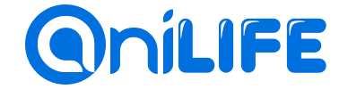

[취미]
제가 평소에 하는 취미는 애니메이션 보기와 게임입니다. 제가 잠이 많은 편이라 최근에는 그다지 못 하는 편이지만 평소에 3~4시간은 하는 편입니다.
게임은 주로 컴퓨터 게임을 하며 롤이라는 게임을 합니다. 잘하는 편은 아니고 그냥 게임 같이 즐길 수 있는 정도입니다. 가장 최근에 한 게임은 배틀그라운드인데, 처음해보는 게임이라 탐구심이 많이 들었습니다.
그리고 애니메이션인데.. 여긴 넘어가도록 하겠습니다. 고등학교 때는 코딩을 취미로 하다가 학업에 집중 해야해서 2,3학년의 경우에는 얼마하지 못한 경우가 있습니다.
언어는 주로 파이썬을 했었는데 하도 오래되어 지금하는 내용 몇 가지 이외에는 기억을 못 하고 있습니다. 조금있으면 시험기간이니 다시 복습하면서 취미로 가질 생각입니다.
[꿈]
저의 꿈은 보컬로이드를 만드는 백엔드 개발자 또는 프론트앤드 개발자입니다. 보컬로이드란 사람이 미리 녹음한 목소리를 기계음으로 바꾸어 자신이 직접 원하는 가사로 노래를 부르게 할 수 있는 프로그램입니다.
제가 이꿈에 관심을 가진 계기는 어렸을 때 그 유명한 미쿠라는 보컬로이드의 노래를 많이 들으면서 나도 이렇게 프로그램을 만들고 싶다는 생각으로 컴퓨터에 관심을 가지게 되었습니다.
돈 문제로 이번 달은 아니었지만 다음 달에 보컬로이드라는 프로그램을 직접 구입해 사용할 예정입니다.